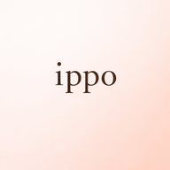

こんにちは
あなたさん
4月20日（月）
0日連続 🌸

今日を記録する
まだ今日の記録がありません
›
0
連続記録日
日
0
総記録日数
日
—
今週の断食
累計
日
月
火
水
木
金
土
today's message
からだの小さな変化に
気づくことが、最初の一歩。
気づくことが、最初の一歩。
インサイト
記録が語るあなたのパターン
記録日数
0
日
最長連続
0
日
平均食事回数
—
食 / 日
平均断食時間
—
時間
COMMUNITY VOICE
みんなの声
今日を記録する
MEAL TIMELINE
食事の記録
時間と食べたものを自由に記入してください
例）0830 朝食 / 1200 昼食
例）0830 朝食 / 1200 昼食
BODY-CONSCIOUS CHOICES
🌿 からだのための選択ガイド
BASAL TEMPERATURE
基礎体温
℃
SYMPTOMS
今日の症状
頭痛
腰痛
下腹部痛
むくみ
肌荒れ
便秘
下痢
吐き気
倦怠感
不眠
イライラ
不安感
食欲増加
食欲低下
眠気
冷え
おりもの
胸の張り
MENSTRUAL CYCLE
生理の状態
なし
少量
普通
多い
不正出血
JOURNAL
今日のメモ
設定
プロフィール
名前未設定
タップして変更
›
気になる症状
設定する
›
気になる疾患
設定する
›
わたしの目標
タップして設定
›
データ
データをエクスポート
›
すべての記録を削除
›
クラウドから復元
データが消えた場合に使用
›
感想・フィードバック
あなたの声がアプリをより良くします。
次の機能は皆さんのフィードバックで決めます。
次の機能は皆さんのフィードバックで決めます。
⭐
⭐
⭐
⭐
⭐
このアプリは医療アドバイスを提供するものではありません。
卵巣嚢腫・PCOS・子宮内膜症などは婦人科への受診をおすすめします。
ippo v1.0 — あなたのからだに寄り添うアプリ